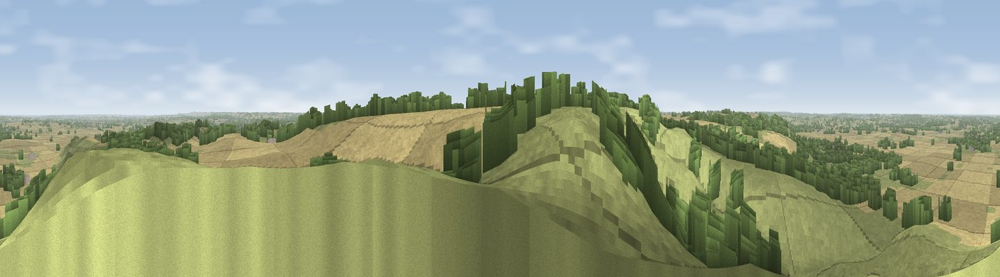
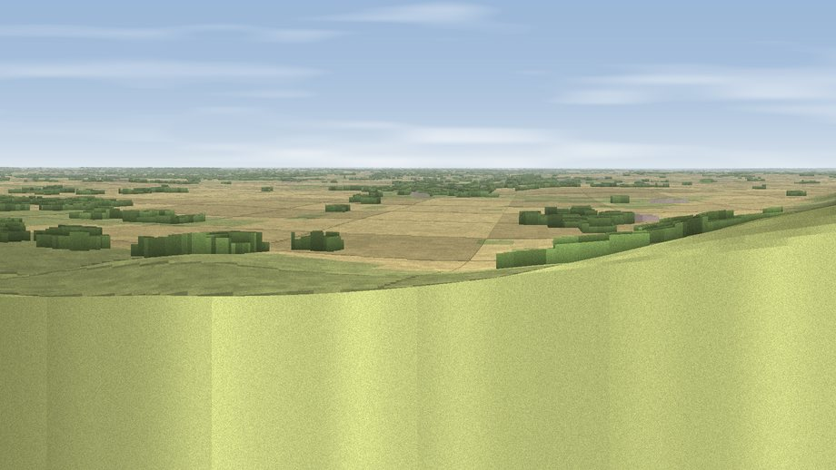
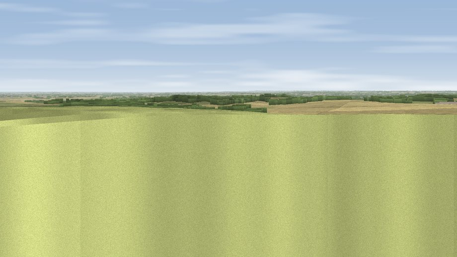

Viewpoint near Hexton
#8451 in England · top 2% of its area beats it · near Hexton · open accessWhere it is
The exact computed spot (TL 12525 29725). Green wedges show where the rendered camera views below look. Click the marker for map links.
Public access: this spot lies on mapped open-access land (CRoW Act 2000) — you may roam here on foot. Computed from Natural England's CRoW access layer and OpenStreetMap rights of way — not the legal definitive map. Always verify locally.
The view, rendered

A 360° render of this exact spot computed from the terrain model, tree cover and land cover — summer colours, afternoon light, calibrated against photographs of famous viewpoints. Real trees, hedges and buildings will differ in detail.
Through the camera


Rendered views along the best directions of this panorama.
The panorama
Grey silhouette: terrain skyline in each direction (720 bearings, Earth curvature and refraction included). Dashed green: skyline with trees (+15 m) and buildings (+8 m) as obstacles. Blue strip: how far the ground is visible on each bearing.
Where the view opens
Wedge length = distance to the farthest visible ground on that bearing (vegetation-aware). Rings at 10, 25 and 50 km.
What fills the view
47% grassland · 39% cropland · 13% woodland ·
Angular shares of the visible panorama (visual magnitude), not map area. Landscape diversity 0.45 (0–1 Shannon).
Key numbers
More beautiful places nearby
The staircase of upgrades: each row has a higher view potential than everything closer. Driving times are estimates from straight-line distance, calibrated against real road routing — check an actual route before setting out.
| Place | Direction | Drive | Score |
|---|---|---|---|
| Beacon Hill | SW · 21 km | ~35 min | 74.1 |
| Viewpoint near Halton | SW · 31 km | ~48 min | 74.3 |
| Coombe Hill Monument | SW · 36 km | ~54 min | 75.5 |
| Viewpoint near Woolstone | WSW · 93 km | ~118 min | 76.7 |
| Viewpoint near Meon Vale | W · 96 km | ~121 min | 77.0 |
| Broadway Hill | W · 101 km | ~126 min | 77.7 |
| Cleeve Hill | W · 114 km | ~138 min | 79.8 |
| Nottingham Hill | W · 114 km | ~139 min | 80.9 |
51.95464, -0.36396 · source: screening · position refined by local search. Computed location — check access rights before visiting.